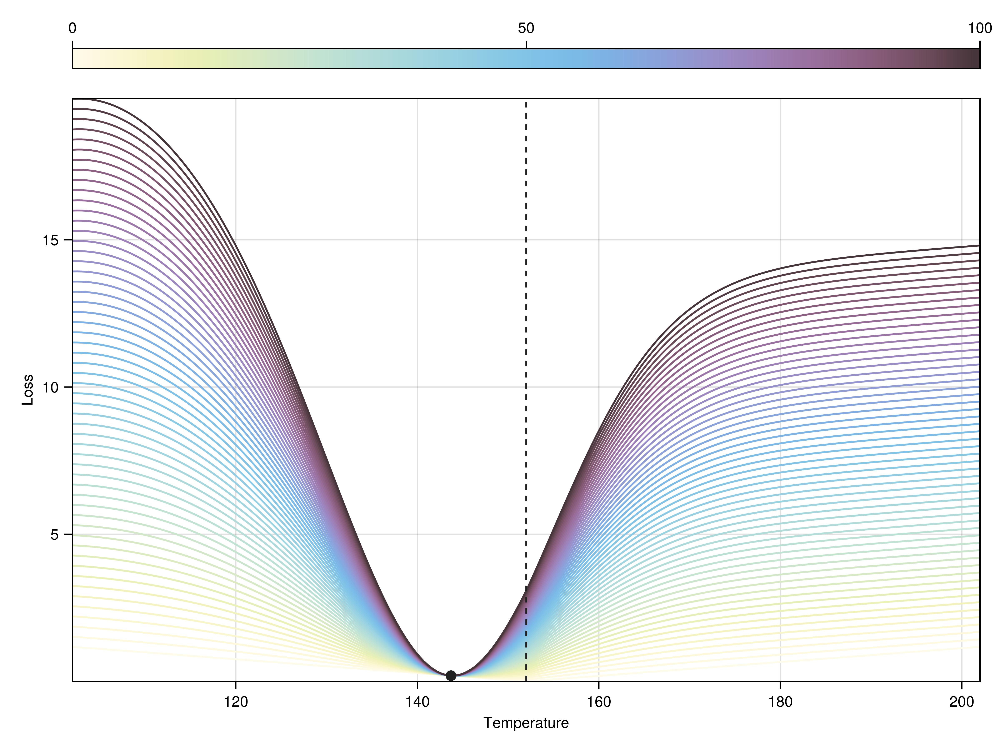
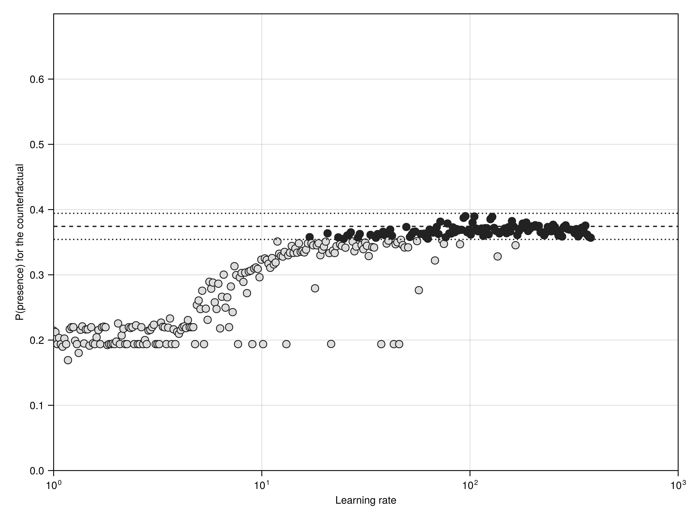
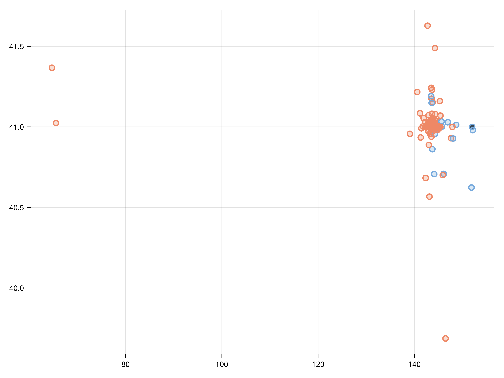

In Chapter 9, we have introduced a methodology to re-use our model on mock inputs in order to figure out the effect of the specific value of a specific variable on the prediction that is made. This is a powerful approach to formulating explanations. In this chapter, we will introduce a related concept, namely the generation of counterfactuals.
Counterfactuals (Wachter et al. 2017) are defined as small perturbations on an actual input instance that yield the opposite prediction. In other words, counterfactuals are mock instances that are as close as possible to an observed data point, but that would lead the model to making the inverse recommendation.
10.1 Illustration: changing the temperature
Before introducing some elements of theory, it helps to think about what we want to achieve in a more general, intuitive way. For this chapter, we will re-use the model we ended up with in Chapter 9, TK
For example, with a temperature of 15.200000000000001 degrees, and a precipitation volume of 858.0, the model would give a probability of 0.19377392149173. You can compare with Figure 5.3 to see that this is associated to a negative prediction.
Is there a temperature at which we would expect the model to make the opposite prediction? Perhaps the simplest approach to this question is to feed our trained model different values of the temperature, and measure the output. What if the location was a degree warmer? A degree colder? Ten?
This approach is both generating perturbations of our initial prediction, and expressing these predictions as a function of whether they lead the model to change its outcome. Conceptually, we are 80% of our way to understanding counterfactuals (in practical terms, we are still on square one, but let’s give it time).
The outcome of running this simple simulations is given in Figure 10.1. From this figure, we can see that the closest temperature that would lead to the model predicting a presence is TODO, which requires a temperature difference of TODO.
Figure 10.1: Effect of changing the temperature for a single observation (marked as a black dot) on the probability returned by the trained SDM (as a black line). There is a value above which the prediction leads to the positive class (the SDM predicts that the conditions are suitable to the species), marked by a dashed line. The generation of counterfactuals is a way to generalize this approach, by also introducing notions of optimality.
Is this a large difference? This is a rather subjective question; one we can ask instead is whether this is an optimal difference, and specifically whether we can find other alternatives inputs to the model that would be less costly (in terms of distance) and more efficient (in terms of effect on the model).
At this point, it is important to note that we will not be addressing the feasibility of making these changes. There are specific algorithms that penalize some variables that are more difficult (or impossible) to change, but they follow the same principles as what we will discuss here. Their inner workings are, quite simply put, orders of magnitude more complex. For an example, and a discussion of why changing features that people can act upon is essential to algorithmic fairness, see Schleich et al. (2021).
10.2 Theory on counterfactuals
In this section, we will look at the method introduced by Wachter et al. (2017), and spend a bit of time linking it to concepts we have seen in other chapters of the book. In the first section, we have defined two components to the problem of generating counterfactuals: given a vector of features \(\mathbf{x}\), we want to generate a new vector of features \(\mathbf{x}'\), such that a model \(f\) would return \(\hat y = f(\mathbf{x})\), and \(\hat y' \approx f(\mathbf{x}')\). Because we are working on a classification problem, we might assume that we want \(\hat y ' = \neg \hat y\), but recall from Section 7.4.2 that we are getting to the binary classification of presence/absence by comparing the probability to an optimized threshold \(\tau\), so we can also aim for \(\hat y' = \tau + \varepsilon\), where \(\varepsilon\) is a very small perturbation (positive or negative) that would make us cross the decision threshold.
10.2.1 Loss function
In Chapter 3, we have established the idea of a loss function, that measures how far away a specific instance is to an optimal solution. What does it means for a countefactual to be optimal? We want the distance between \(\hat y\) and \(\hat y'\) to be as small as possible (we are meeting the criteria of “the prediction has changed”), while also ensuring that the distance between \(\mathbf{x}\) and \(\mathbf{x}'\) remains small (we are meeting the criteria of parsimonious explanations).
Wachter et al. (2017) suggest that the appropriate loss function to use is
where \(\lambda\) is a learning rate (as defined in Section 3.3.4), and \(\text{d}\) is a distance function between the input vectors. In this formulation, the loss function is not handling categorical predictors (which is an acceptable compromise, because we are not using any in this illustration).
In Wachter et al. (2017), the distance function for \(m\) features is defined as
where \(\text{MAD}_i\) is the median absolute deviation for this feature over the entire dataset. The median absolute deviation for an instance \(j\) of a feature \(i\) drawn from the entire training dataset \(\mathbf{X}\) is
This indicator is very robust to outliers, and returns a scale-free value that allows comparing the distributions of different variables. Although MAD can be used to detect outliers (Benhadi-Marín 2018; Shimizu 2022), this is not its purpose here: instead, it is used to penalize datapoints that would be outliers in the space of distances we care about (namely, between \(\mathbf{x}\) and \(\mathbf{x}'\)).
10.2.2 Learning rate
In Equation 10.2, we introduced a learning rate \(\lambda\). The interpretation of this term is relatively straightforward, as it measures the relative importance of getting close to \(\hat y'\) compared to keeping \(\mathbf{x}'\) close to \(\mathbf{x}\). Therefore, using \(\lambda = 2\) means that getting a good switch of the prediction is twice as important as keeping a parsimonious counterfactual.
Because the a priori value of \(\lambda\) may not be intuitive to define, we can rely on the techniques introduced in Chapter 7, and treat this as an hyper-parameter. Alternatively, Wachter et al. (2017) suggest the use of a threshold\(\sigma\) for the distance between the outcome of \(f(\mathbf{x}')\) and the desired value of \(\hat y'\), which is a trick used in other techniques like acceptance-rejection sampling (Flury 1990). This threshold too must be decided upon before running the algorithm. Note that because the distance component of the loss function (Equation 10.2) uses the median absolute deviation, we can follow Leys et al. (2013) that suggest to use the thresholds introduced by Miller (1991) to also eliminate proposals of \(\mathbf{x}'\) that are too far away from the original input \(\mathbf{x}\).

Figure 10.2: Consequences of changing only the temperature (as in Figure 10.1) on the loss function (Equation 10.1) for a single prediction. Notice that changing the value of the learning rate (indicated by the color gradient) to get to a point where we can conclude that the suggested counterfactual is optimal.
In Figure 10.2, we can see the effect of changing the learning rate on the value of the loss function when only changing the temperature as we did for Figure 10.1. Notice that for values of the learning rate that are too small, there is not counterfactual for which the loss is lower than the original datapoint, and therefore we need to increase the learning rate until the optimum (smallest point that brings us above the threshold) can be reached. The shape of the response of the loss function to the change in temperature is also informative. In one direction, it increases linearly: \(\mathbf{x}'\) is getting further and further away from \(\mathbf{x}\) without the prediction getting closer to \(\hat y'\). On the other direction, it is more or less hump-shaped, with an optimal point. When we increase the learning rate (possibly by a lot), the behavior in which \(\mathbf{x}\) is an optimum of this problem disappears.
TK the threshold is important because it ensures we will only look at the space of parameters around the optimal solution - but making assumptions about the shape of the loss landscape
10.2.3 Optimization
In Chapter 3, we were able to write down an analytical expression of the gradient for our model (and its associated loss function). This may not be the case for the specific problem we are trying to solve. In addition, the surface of the loss function over possibly many parameters may not be smooth; in fact, if we used tree-based classifiers, it would be a guarantee that it would not. For this reason, we will introduce alternative methods to perform the optimization. The general shape of the problem we are tying to solve is the same as in Chapter 3: given an input \(\mathbf{x}\), we are interested in generating \(\mathbf{x}'\) that minimizes loss.
But let us get back to the issue we discussed in Section 10.2.2: the value of \(\lambda\) is not easy to determine a priori. And as we show in Figure 10.1, a learning rate that is too low can get us to a situation where \(\mathbf{x}\) is a local optimal for the loss function, which would make the generation of counterfactuals more difficult. On the other hand, a learning rate that is introducing the problems we discussed in Section 3.3.4. We want the valuer of the learning rate to be “just right”. For this reason, a common approach is to re-start the algorithm to generate a counterfactual, and if this counterfactual is not adequate, to re-try with a larger learning rate.

Figure 10.3: Because the learning rate is difficult to guess, we start with a low value of \(\lambda\), and increase it (here by 2 percent) until the counterfactual is within a small range of the desired \(\hat y'\) value. This method sets a tolerance on the error we are willing to make on the final prediction, and optimizes the learning rate accordingly. In a sense, this is an instance of a learning curve as in Chapter 7.
This approach is illustrated in Figure 10.3. Note that there is still a variation in whether the counterfactual is within the threshold when we use a large learning rate. This is because the optimization process is stochastic, and can have worse performance when we start the Nelder-Mead algorithm (which we use in this chapter) with less than ideal configurations. In practice, for the rest of the examples, we will generate more counterfactuals than we need, and filter the ones that are within the threshold.
10.3 Application: todo

Figure 10.4: Generation of a number of counterfactual samples for an actual observation (black diamond), color-coded by whether or not the prediction for each counterfactual is positive or negative. The target \(\hat y'\) is set to \(\tau + 0.015\), which explains why the generated counterfactuals lie on the separation between the positive and the negative class.
filter by conditions existing in the dataset
filter!(p ->predict(model, p), proposals)L = [loss(model, cnd, xp, model.τ +0.015, 500.0; threshold=false) for xp in proposals]ord =partialsortperm(L, 1:10)[proposals[o][model.v] for o in ord] # Turn into a table[abs.(cnd[model.v] .- proposals[o][model.v])./cnd[model.v].*100 for o in ord] # Turn into a table